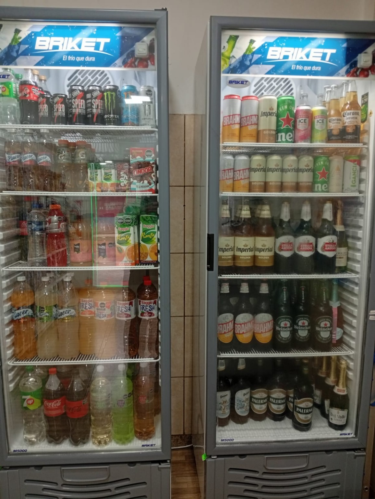
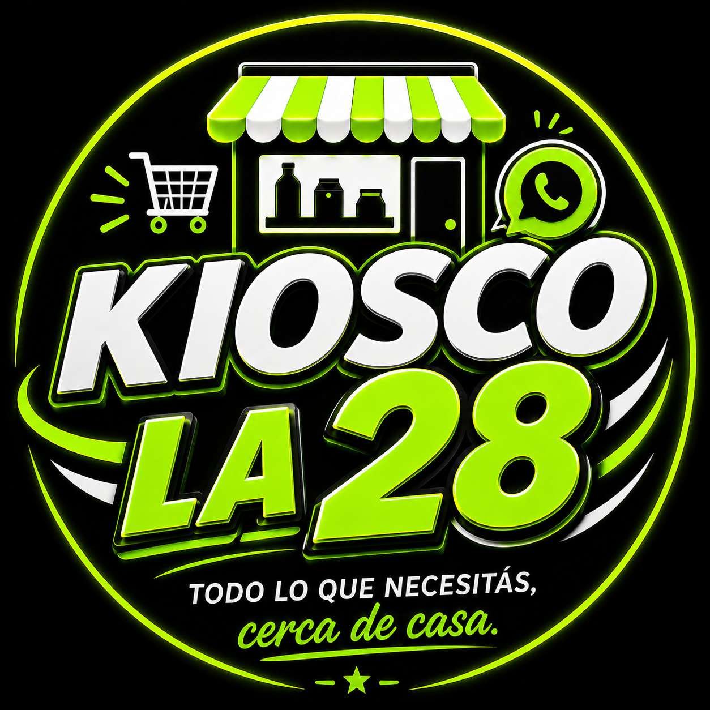
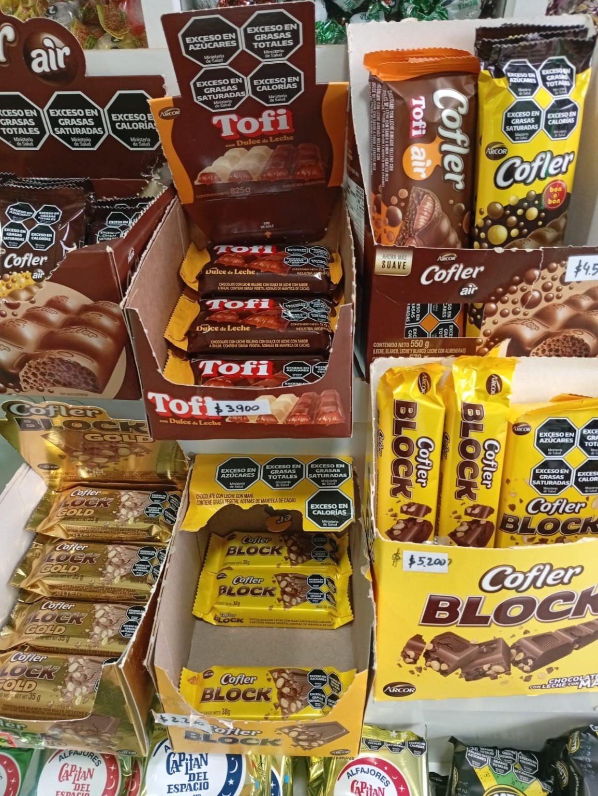
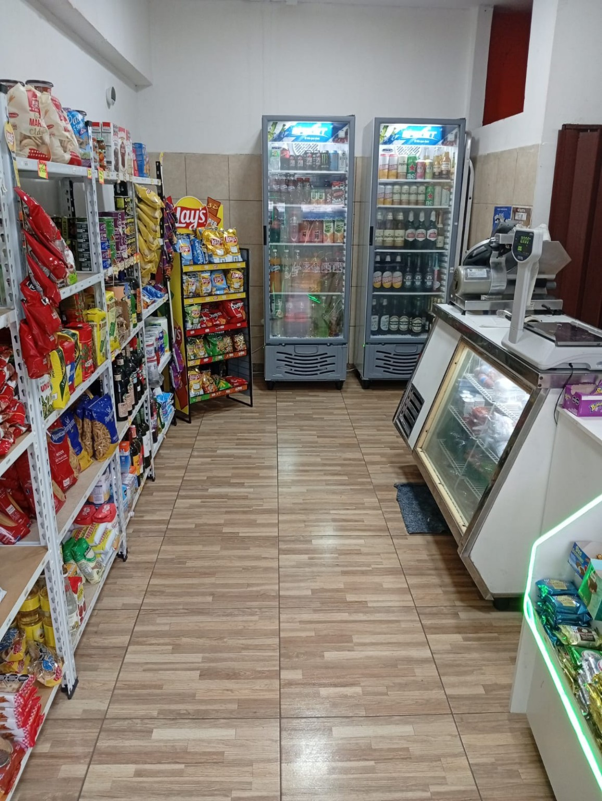
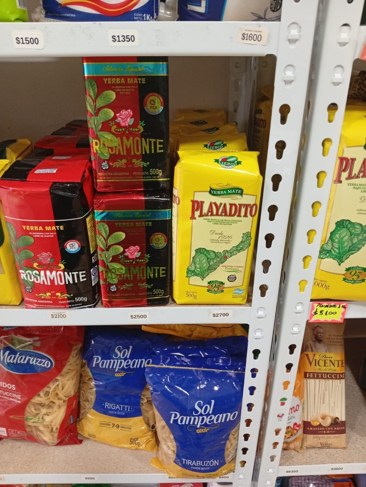
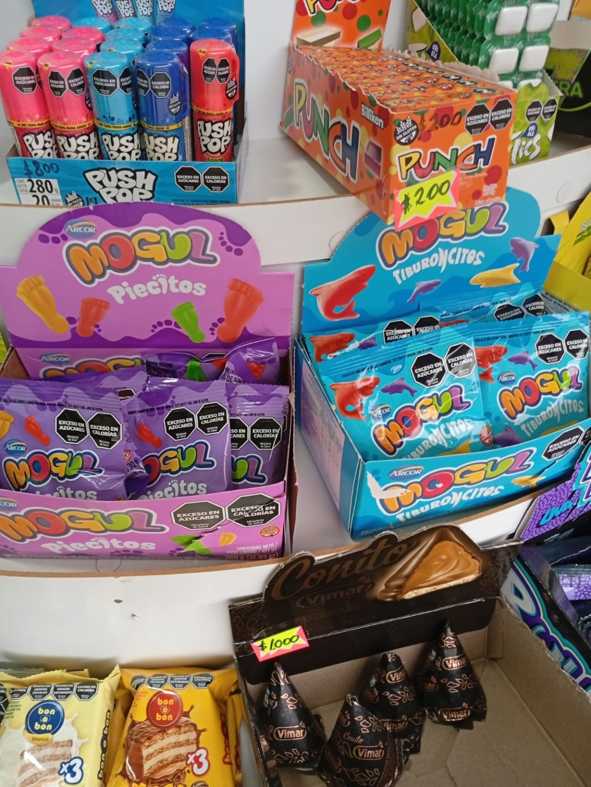
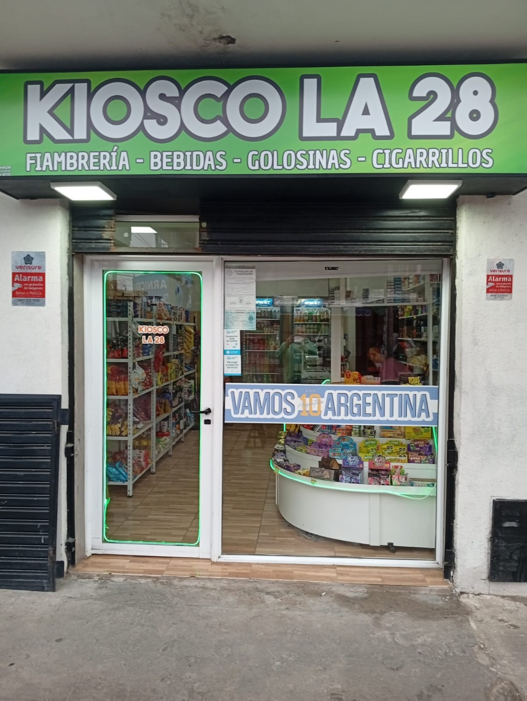

Bebidas
Gaseosas, jugos, energizantes, cervezas y más.

Kiosco La 28Tu kiosco de confianza en Berazategui
Bebidas bien frías, golosinas, fiambrería, almacén, snacks y mucho más.
Variedad para todos los días
Productos para resolver una compra rápida, preparar una comida o darte un gusto.

Gaseosas, jugos, energizantes, cervezas y más.

Opciones para todos los antojos.

Fiambres y productos frescos para llevar.

Yerba, fideos, conservas, aderezos y mucho más.

Para compartir, picar o acompañar una bebida.
Un comercio cercano
En Kiosco La 28 trabajamos para que encuentres lo que buscás en un espacio limpio, cómodo y con atención cercana.

Conocé el local
Estamos cerca
Dirección: Calle 28 N.º 1391, casi esquina 114, Berazategui.
Horario de invierno: todos los días, de 9:00 a 21:00 hs.
WhatsApp: 11 2499-7007